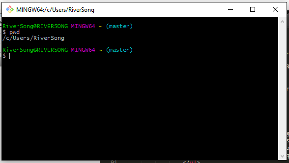
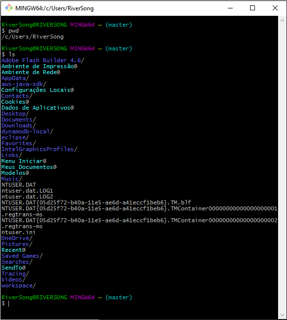
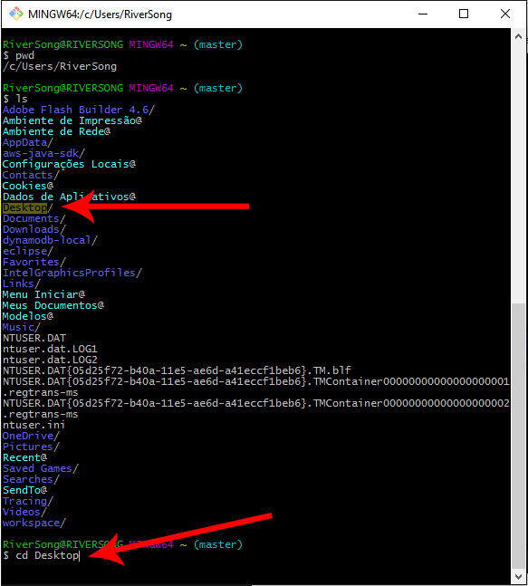
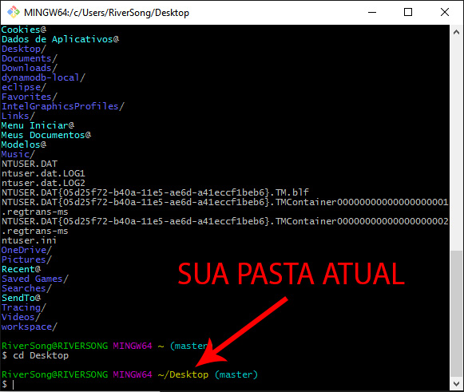
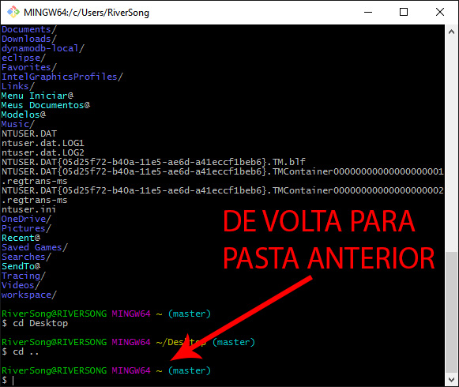
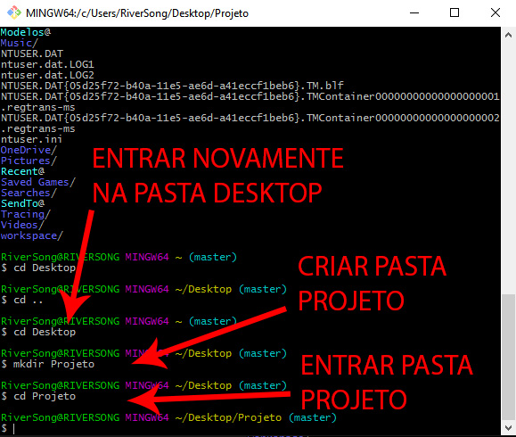

Abaixo podemos ver um terminal, mas não se assustem não é nada assim que vocês farão com eles, a não ser que queiram entrar na Matrix, mas não acho que seja o caso, voltando, este é um terminal e assim como o navegador compreende o "idioma" HTML o terminal compreende o idioma "Unix", ou seja, linhas de comando que dizem a ele o que fazer, neste caso, pegar as versões feitas por você de seu site e salvar de maneira segura no GitHub.

OLÁ TERMINAL EU QUERO FALAR COM VOCÊ!
Calma ai! As coisas não são tão simples assim, infelizmente, embora o terminal esteja 100% pronto para ser seu amigo ele ainda não faz a menor ideia do que você está falando, para isso você precisa falar a mesma língua que ele, então vamos por partes:
COISAS QUE O TERMINAL PODE FAZER:
- Permitir que você navegue por ele entre pastas de seu computador;
- Criar arquivos e pastas;
- Indicar sua localização atual dentro das pastas;
- Mostrar as pastas e arquivos dos seus diretórios (pastinhas criadas no Windows aquela "Nova Pasta")
COISAS QUE O TERMINAL NÃO PODE FAZER
- Dar conselhos amorosos;
- Programar páginas web sozinho;
- Ensinar o caminho para o curso Eu Programo;
- Te tirar da cama em dias frios;
- Mapa astral.
Ok! Se você entendeu o que o terminal pode fazer por você aqui embaixo estão listados algumas formas de você falar com ele:
Em primeiro lugar abra seu terminal e digite: pwd (comando que mostra em que lugar do seu computador você está no momento). Ele ira retornar algo como:

Em seguida digite ls e ele irá listar todas as pastas e arquivos do diretório em que você está, como pode ser visto abaixo:

Nessa lista acima podemos ver todos os diretórios de onde estamos, nele você deverá encontrar onde seu projeto está salvo e entrar nessa página, da mesma forma que você faria no seu computador navegando pelo Windows, porém, estamos no terminal e ele não tem setas e pastas com um layout bonitinho, ele entende que você querer entrar em uma pasta é feito através do comando cd *Nome do diretório* como pode ser visto abaixo:

Após apertar o "Enter" o resultado será esse:

Da mesma forma que foi possível entrar na pasta, também é possível voltar, digitando o comando cd seguido de dois pontos, ou seja cd ..

Agora vamos criar a pasta do nosso projeto, usamos uma sequência de comandos. Primeiro cd Desktop para entrarmos na nossa pasta Desktop, ou seja, sua área de trabalho, local onde criaremos a pasta projeto. Depois vamos usar o comando mkdir Projeto, que criará a pasta Projeto na sua área de trabalho. E depois cd Projeto para entrar na sua nova pasta.

Clique aqui para terminar.
_13.gif)